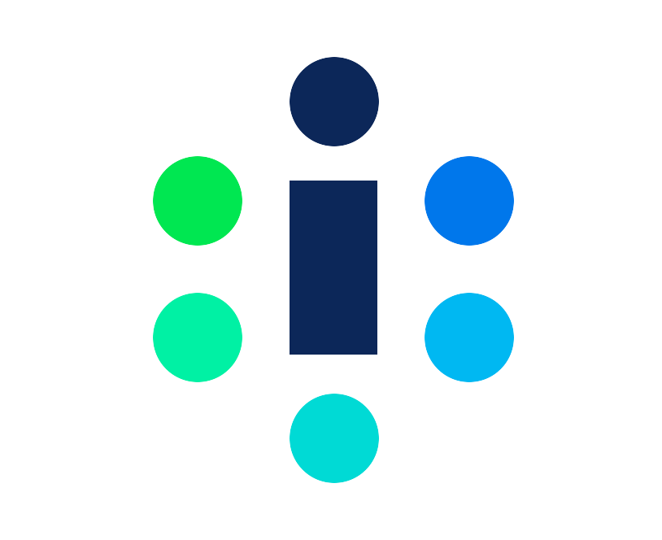
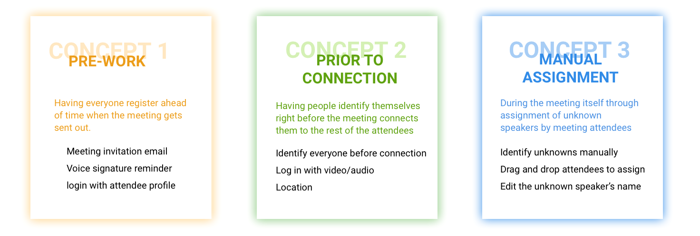

Desktop · WebEx Plugin · Product Design
Identio — Meeting Assistance
Make every speaker known at a virtual meeting between offices. Identio is a WebEx plugin that uses voice recognition technology to identify speakers in multi-office virtual meetings — solving the common problem of not knowing who is talking when multiple people share audio lines.
The Problem
"Gone are the days of multi-conference room confusion and team members untangling who said what after a conference call."
In multi-office virtual meetings, multiple people often share the same audio line. Existing tools like WebEx cannot identify which person from a remote office is speaking at any moment. This creates confusion during the meeting and makes post-meeting follow-up nearly impossible.

Research & Discovery
We used a multi-method research approach:
- Literature review on interpersonal communication culture
- 3 in-depth interviews with frequent meeting participants
- Survey of 127 respondents confirming gaps in speaker identification tools
Key Findings
- Voice recognition technology (like Amazon Echo) can create voice profiles to distinguish speakers
- Meeting culture emphasizes respect; knowing and using people's names makes them feel valued
- Users struggle to build professional connections with remote colleagues they've never met face-to-face



Ideation
We ran 5-minute individual brainstorming sessions followed by team consolidation using an impact/feasibility evaluation matrix. Three concept directions emerged for the Phase 1 setup:
- Pre-work — Email-based attendee setup before the meeting (ranked lowest by testers)
- Prior to Connection — Attendees identify themselves before joining (ranked highest)
- Manual Assignment — Real-time speaker identification during the call
User feedback favored a hybrid approach: pre-meeting setup combined with the ability to manually assign unknown speakers during the call.


Design Process
Phase 1: Setup Flow
We designed a single-person identification interface (rather than batch processing) to match the natural rhythm of how people join meetings one by one. A forward button navigation accommodates variable attendee counts without requiring the host to know the final number in advance.


Phase 2: Main Interface
Testing revealed users strongly preferred a list view over a grid view — list format provided enough space for detailed attendee information at a glance. A single-column layout minimized disruption to the meeting screen.



Iterations
We conducted three rounds of user testing with 12 participants total, making major revisions after each round.
Iteration 1
Separated current speaker display with striking visual prominence — users wanted to identify the current speaker at a glance without scanning a list.


Iteration 2
Simplified navigation from tabs to an expandable arrow icon, addressing menu clarity issues and reducing cognitive load during active meetings.


Iteration 3
Added one-step unknown speaker assignment with automatic room location detection via color-coding by office — users found the room map highly intuitive for understanding where each speaker was located.


Final Design
The final Identio plugin provides four primary functions:
- Speaker Identification — Current speaker displayed centrally with name, title, and office location
- Organizational Integration — Expandable profiles showing job title, contact info, and office
- Room Positioning — Visual map showing speaker location for post-meeting in-person connections
- Save Connections — "Like" feature for marking interesting contacts for later follow-up


Visual System
Reflections
Strengths: The team showed great flexibility when research shifted the project direction from an initial wearable app concept to a WebEx plugin. Successfully prototyping a backend-heavy technical concept was a major achievement for a design-only team.
Future opportunities:
- Real meeting environment testing with multiple simultaneous participants
- Platform expansion to mobile and wearable form factors
- Meeting transcription and interaction logging
- Integration with calendar and contact management tools